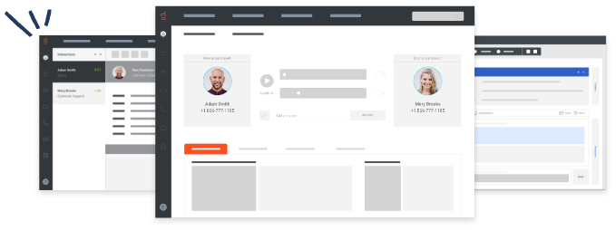
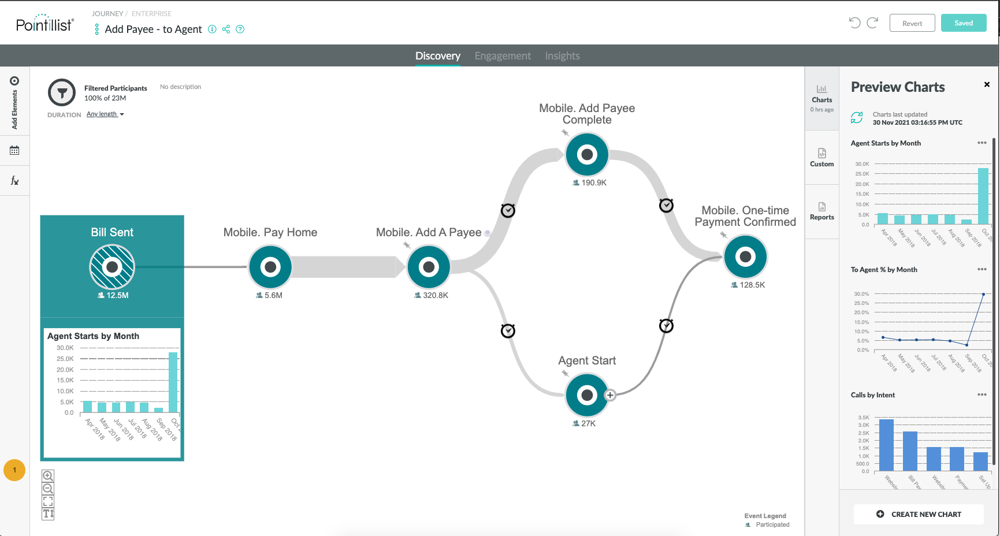

<section>
    <div>
        <div class="product_container">
            <div style="text-align: center;">
                
            </div>
            <div class="product_description" [ngStyle]="{'color': isFirstBtnClicked ? 'red' : 'black'}">
                <h3 style="text-align: center;">Genesys <span style="color: #ff4f1f;">Cloud CX</span></h3>
                <h4>Choose the all-in-one cloud contact centre solution</h4>
                <p>Unify customer experiences across phone, email, chat, text and social channels. Keep agents
                    productive
                    and engaged, no matter where they are. The Genesys Cloud CX<sup>TM</sup>. platform does it all.</p>
                <p>Create a new world of efficiency and empathy.</p>
                <p>Imagine a world where contact centres anticipate needs and respond so fully that customers feel
                    pleased
                    with every interaction — a world where employees are excited to get to work each day.</p>
                <p>The Genesys Cloud CX platform makes that vision a reality. Around the globe, thousands of businesses
                    use
                    this powerful, all-in-one contact centre solution to surprise and delight customers with effortless,
                    empathetic experiences.</p>
            </div>
            <app-button-component parentFieldName="firstButton" (buttonClicked)="onClickButtonFromChild($event)"></app-button-component>
        </div>

        <div class="product_container">
            <div style="text-align: center;">
                
            </div>
            <div class="product_description" [ngClass]="{'violet': isSecondBtnClicked, 'black': !isSecondBtnClicked}">
                <h3 style="text-align: center;">Pointillist</h3>
                <h4>Deliver effortless, connected and personalised experiences</h4>
                <p>Measure, monitor and orchestrate customer journeys with the Pointillist Customer Journey Management
                    Platform™ to optimise CX and improve digital containment, contact centre performance and more.</p>
                <p>END-TO-END CUSTOMER JOURNEY MANAGEMENT SOFTWARE.</p>
                <p>Forrester Research named Pointillist as a Leader in The Forrester Wave™: Journey Orchestration
                    Platforms,
                    Q2 2020.</p>
            </div>
            <app-button-component parentFieldName="secondButton" (buttonClicked)="onClickButtonFromChild($event)"></app-button-component>
            <!-- <button (click)="isSecondBtnClicked = !isSecondBtnClicked">Click Me</button> -->
        </div>
        <div style="clear: both"></div>
    </div>
</section>